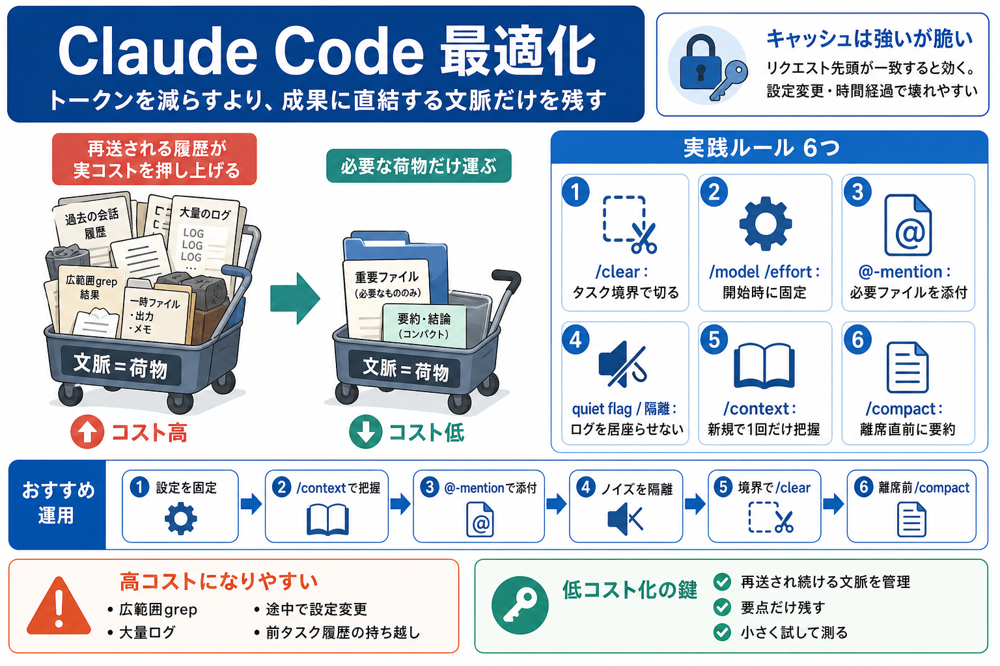

Claude API Cost Optimization 2026: Batch and Caching
Anthropic Claude Haiku 4.5 costs $1 / $5 per 1M input/output tokens, Sonnet 4.6 is $3 / $15, and Opus 4.6 is $5 / $25. …

コストを「設計」で下げる
「トークンを減らす」よりも、「成果に直結する文脈だけを残す」設計で、実コスト（再プリフィル）を抑えます。
無駄が積み上がる
Claude Codeでは、ファイル読み取りやコマンド出力が会話に残り、次のターンでも再送・再参照されます。結果として「少し直すだけ」で推論対象（文脈）が増え、コストが跳ねます。
文脈＝荷物
同じ仕事でも「参照するファイル数」「前のターンの出力をどれだけ引きずるか」で、毎回“荷物”が増えます。荷物が増えるほどモデルは毎ターンそれを踏まえて考え続けます。
キャッシュの前提
プロンプトキャッシュは「リクエスト先頭が完全一致」で成立します。/model /effort、fast mode、compact、経過時間などで先頭が変わるとキャッシュが壊れ、高コストの再プリフィルが起き得ます。
実践のルール6つ
コストを下げる中心は「文脈の持ち越しを管理」することです。
同じ修正でも差
“トークン削減”のつもりでも、参照不要な探索（広範囲読み取り）や不必要なファイル増加が入ると逆に高くなります。鍵は「どれが再送され続けるか」です。
運用シナリオ
まずセッションの“前提”を固め、次に不要文脈を増やさない順で進めます。
キャッシュ対策
/model や /effort はプロンプトキャッシュの鍵に含まれるため、途中変更で先頭が別物になりやすくなります。変更するなら /clear のような“セッション境界”で行うのが無難です。
残るのは履歴
タスク間で /clear しないと、前タスクのファイル読み取りやコマンド出力が後続ターンにも残り、継続コストを押し上げます。キャッシュが効いていても“ゼロ”にはなりません。
ノイズ隔離
テスト出力や大量ログは、その後のターンで居座りやすく文脈占有が進みます。quiet flag やサブエージェントで“要点だけ返す”設計にすると効きやすいです。
要約は“今”
/compact はキーボードから離れる直前が推奨です。キャッシュ有効期間内なら安く要約でき、時間が空いてからだとキャッシュ失効で丸ごと高コストになり得ます。
結論：試して最適点
提案はルールとして盲信せず、小さく試して「ログ・出力・修正成功率・コスト」を見ながら最適点を探索するのが堅実です。特にキャッシュ最適化で推論材料が不足しないか確認してください。
Anthropic Claude Haiku 4.5 costs $1 / $5 per 1M input/output tokens, Sonnet 4.6 is $3 / $15, and Opus 4.6 is $5 / $25. …
| Model | Input | Output | Cache Read | Batch (in/out) | --- --- | Haiku 4.5 | $1.00 | $5.00 | $0.10 | $0.50 / $2.50 …
| Metric | Value | --- | | Input (fresh, uncached) | 239 tokens | | Cache reads | 32,868,011 tokens | | Cache creates |…
to the model. Prompt caching makes this cheap — cached tokens cost 1/10th the normal price. The catch: the cache expires…
Quick answer: Claude API pricing in July 2026 runs from $1/$5 per MTok (Haiku 4.5) to $10/$50 per MTok (Fable 5). Opus 5…